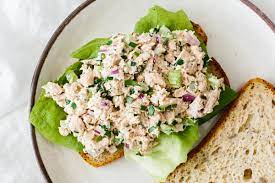

Tuna Salad

Description
I never get tired of an excellent tuna salad recipe, and of the hundreds of versions I’ve made, this version is the best. Serve on toast, crackers, a bed of greens, or grilled as a very delicious tuna melt.
Start with my recipe and enjoy it just as it is, or throw in your own favorite must-haves. It’s ready in minutes and always handy to have when hunger strikes.
Ingredients
- 4 cans of tuna
- 1 cup mayo
- 1/3 cup celery finely chopped
- 2 tbs red onion minced
- 2 tbs fresh lemon juice
- 1 clove garlic minced
- salt and pepper to taste
Step-by-Step Instructions
- In a medium bowl, combine tuna, mayonnaise, celery, onion, relish, lemon juice, and garlic.
- Season to taste with salt and pepper (I like ½ teaspoons salt and ¼ teaspoon pepper). Serve immediately or cover and chill until serving.